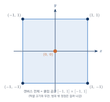
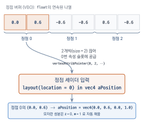
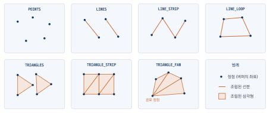
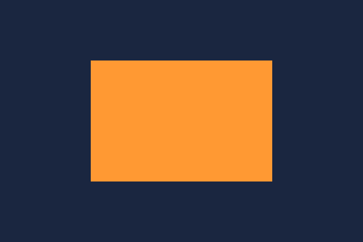
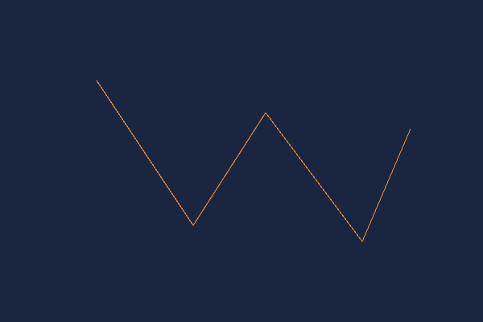

첫 번째 삼각형 그리기
이 장을 마치면
- WebGL 프로그램의 뼈대(초기화와 그리기)를 구성할 수 있다.
- 셰이더를 컴파일하고 프로그램으로 링크하는 과정을 이해할 수 있다.
- 버퍼를 만들어 정점 데이터를 GPU에 전달할 수 있다.
- 정점 속성을 셰이더와 연결하여 첫 삼각형을 그릴 수 있다.
- 프리미티브의 종류를 알고, 같은 정점으로 다른 도형을 그릴 수 있다.
1장에서 우리는 캔버스를 원하는 색으로 지우는 데 성공했다. 이제 진짜 그림을 그릴 차례이다. 이 장의 목표는 화면에 삼각형 하나를 그리는 것이다. 목표가 소박해 보이지만, 삼각형 하나를 그리는 과정에는 셰이더 작성과 컴파일, 정점 데이터의 GPU 전송, 파이프라인 연결까지 현대 그래픽스 프로그래밍의 뼈대가 모두 들어 있다. 이 장의 인용구처럼, 삼각형 하나를 제대로 그릴 줄 알게 되면 그다음부터는 삼각형의 개수가 늘어날 뿐이다.
이 장에서는 먼저 WebGL 프로그램이 어떤 구조로 이루어지는지 큰 그림을 그린 뒤, 셰이더를 준비하고, 정점 데이터를 버퍼에 담아 GPU로 보내고, 마침내 삼각형을 화면에 띄운다. 마지막으로 같은 정점들을 서로 다른 방식으로 조립하는 프리미티브를 살펴본다.
2.1 WebGL 프로그램의 뼈대
그래픽스 프로그램은 종류를 불문하고 크게 두 가지 일을 한다. 하나는 그리기에 필요한 자원을 준비하는 초기화initialization이고, 다른 하나는 준비된 자원으로 실제로 화면을 그리는 그리기rendering이다. 데스크톱 그래픽스 프레임워크들은 여기에 창 크기가 바뀔 때 호출되는 크기 변경 처리까지 더해 세 가지 함수를 뼈대로 삼아 왔다. WebGL에서도 이 구조는 그대로 유효하다. 우리는 프로그램을 다음 두 함수로 조직할 것이다.
init()— 셰이더 준비, 버퍼 생성 등 한 번만 수행하는 초기화render()— 화면을 지우고 물체를 그리는 일 (지금은 한 번만, 10장부터는 매 프레임)
삼각형 하나를 그리기 위해 초기화 단계에서 해야 할 일은 다음 네 가지이다.
- 정점 셰이더와 프래그먼트 셰이더 소스를 컴파일하고 하나의 프로그램으로 링크한다.
- 정점 좌표를 담은 버퍼를 만들어 GPU에 올린다.
- 버퍼의 데이터를 셰이더의 입력 변수와 연결한다.
drawArrays()로 그리기 명령을 내린다.
1장에서 본 렌더링 파이프라인과 연결해 보면, ①은 파이프라인의 정점 처리·프래그먼트 처리 단계에 우리가 만든 프로그램을 꽂아 넣는 일이고, ②·③은 파이프라인의 입구에 정점 데이터를 공급하는 일이며, ④는 파이프라인 전체를 가동시키는 방아쇠이다.
가장 단순한 셰이더 한 쌍
파이프라인을 가동하려면 정점 셰이더와 프래그먼트 셰이더가 반드시 하나씩 있어야 한다. 셰이더는 GLSLOpenGL Shading Language이라는 전용 언어로 작성하며, 문법은 3장에서 본격적으로 배운다. 여기서는 동작하는 최소한의 셰이더를 준비한다. 먼저 정점 셰이더이다.
#version 300 es
// 정점 속성: 버퍼에서 정점 좌표를 받는 입력 변수
layout(location = 0) in vec4 aPosition;
void main() {
// 받은 좌표를 그대로 파이프라인의 다음 단계로 넘긴다
gl_Position = aPosition;
}첫 줄의 #version 300 es는 WebGL 2.0의 셰이더 언어(GLSL ES 3.0)를 쓰겠다는 선언으로, 반드시 소스의 첫 줄에 있어야 한다. 정점 셰이더의 임무는 각 정점의 최종 위치를 내장 변수 gl_Position에 기록하는 것이다. 지금은 받은 좌표를 아무 변환 없이 그대로 넘긴다. 다음은 프래그먼트 셰이더이다.
#version 300 es
precision mediump float;
// 이 프래그먼트의 최종 색을 담는 출력 변수
out vec4 fragColor;
void main() {
fragColor = vec4(1.0, 0.6, 0.2, 1.0); // 주황색
}프래그먼트 셰이더의 임무는 프래그먼트 하나하나의 색을 출력 변수에 기록하는 것이다. 이 셰이더는 모든 프래그먼트를 주황색으로 칠한다. 두 셰이더 소스는 자바스크립트 코드 안에 백틱(`)으로 감싼 템플릿 문자열로 담아 둔다.
const vsSource = `#version 300 es
layout(location = 0) in vec4 aPosition;
void main() {
gl_Position = aPosition;
}`;
const fsSource = `#version 300 es
precision mediump float;
out vec4 fragColor;
void main() {
fragColor = vec4(1.0, 0.6, 0.2, 1.0);
}`;#version 300 es 선언 앞에는 공백이나 빈 줄이 있어서는 안 된다. 템플릿 문자열을 시작하는 백틱 바로 뒤에서 #version이 시작되도록 작성하자. 줄바꿈이 하나라도 먼저 나오면 셰이더 컴파일이 실패한다.
셰이더 컴파일과 프로그램 링크
셰이더 소스는 문자열일 뿐이므로, GPU에서 실행되려면 컴파일 과정을 거쳐야 한다. C 프로그램이 컴파일과 링크를 거쳐 실행 파일이 되듯이, 두 셰이더도 각각 컴파일compile된 뒤 하나의 프로그램program으로 링크link된다. 이 일을 해 주는 도우미 함수를 만들어 두면 앞으로 계속 재사용할 수 있다.
// 셰이더 하나를 컴파일한다 (type: gl.VERTEX_SHADER 또는 gl.FRAGMENT_SHADER)
function makeShader(gl, type, source) {
const shader = gl.createShader(type);
gl.shaderSource(shader, source); // 소스 등록
gl.compileShader(shader); // 컴파일
if (!gl.getShaderParameter(shader, gl.COMPILE_STATUS)) {
// 컴파일 실패 시 오류 메시지를 콘솔에 출력
console.log(gl.getShaderInfoLog(shader));
return null;
}
return shader;
}
// 정점·프래그먼트 셰이더를 링크하여 프로그램을 만든다
function makeProgram(gl, vsSource, fsSource) {
const vs = makeShader(gl, gl.VERTEX_SHADER, vsSource);
const fs = makeShader(gl, gl.FRAGMENT_SHADER, fsSource);
const program = gl.createProgram();
gl.attachShader(program, vs);
gl.attachShader(program, fs);
gl.linkProgram(program); // 링크
if (!gl.getProgramParameter(program, gl.LINK_STATUS)) {
console.log(gl.getProgramInfoLog(program));
return null;
}
return program;
}컴파일과 링크가 실패해도 WebGL은 예외를 던지지 않는다. 대신 COMPILE_STATUS·LINK_STATUS를 조회해 성공 여부를 확인하고, 실패했다면 getShaderInfoLog()로 오류 메시지를 얻는다. 셰이더가 늘어날수록 이 오류 확인 코드가 디버깅 시간을 크게 줄여 주므로, 처음부터 습관을 들이자.
셰이더 준비는 소스 작성 → 컴파일(compileShader) → 링크(linkProgram)의 3단계이다. 링크까지 마친 프로그램을 gl.useProgram()으로 파이프라인에 장착하면 이후의 그리기 명령이 이 셰이더들로 처리된다.
2.2 정점 데이터를 GPU로 — 버퍼와 정점 속성
셰이더가 준비되었으니 이제 그릴 대상, 즉 삼각형의 정점 좌표를 GPU에 전달할 차례이다.
WebGL의 좌표계 — 클립 공간
정점 좌표를 정하려면 먼저 WebGL이 사용하는 좌표계를 알아야 한다. 아무 변환도 하지 않을 때 WebGL의 화면 좌표는 클립 공간clip space이라는 정규화된 좌표계를 따른다. 캔버스의 픽셀 크기와 무관하게, 캔버스 왼쪽 끝이 \(x=-1\), 오른쪽 끝이 \(x=+1\)이고, 아래쪽 끝이 \(y=-1\), 위쪽 끝이 \(y=+1\)이다. 캔버스 정중앙이 원점 \((0, 0)\)이며, 이 범위를 벗어난 정점은 화면 밖으로 잘려 나간다. 그림 2.1은 캔버스 전체에 대응하는 클립 공간의 좌표계를 나타낸다.

수학 시간에 쓰던 좌표계처럼 \(y\)축이 위를 향한다는 점에 주목하자. 2차원 웹 그래픽스(캔버스 2D)나 마우스 좌표는 \(y\)가 아래로 갈수록 커지지만, WebGL의 클립 공간은 위가 양수이다. 우리가 그릴 삼각형의 세 정점은 다음과 같이 정한다.
// 삼각형 정점 3개의 (x, y) 좌표 — 클립 공간 기준
const vertices = new Float32Array([
0.0, 0.6, // 위쪽 꼭짓점
-0.6, -0.6, // 왼쪽 아래 꼭짓점
0.6, -0.6, // 오른쪽 아래 꼭짓점
]);좌표를 담을 때는 일반 배열이 아니라 Float32Array를 사용했다. GPU는 32비트 부동소수점 데이터를 다루므로, 자바스크립트의 64비트 숫자 배열을 그대로 보낼 수 없고 형식이 지정된 형식화 배열typed array로 변환해 전달해야 한다.
버퍼 만들기
정점 데이터는 버퍼buffer라는 GPU 메모리 공간에 담아 전달한다. 버퍼를 사용하는 과정은 세 단계이다.
const vbo = gl.createBuffer(); // ① 버퍼 생성
gl.bindBuffer(gl.ARRAY_BUFFER, vbo); // ② 작업 대상으로 바인딩
gl.bufferData(gl.ARRAY_BUFFER, vertices, // ③ 데이터 업로드
gl.STATIC_DRAW);②의 바인딩binding은 1장에서 배운 상태 기계 개념의 연장이다. bindBuffer()는 "지금부터 정점 버퍼 작업은 이 버퍼를 대상으로 한다"라는 상태 설정이며, ③의 bufferData()는 대상 버퍼를 인자로 받지 않고 현재 바인딩된 버퍼에 데이터를 올린다. 마지막 인자 gl.STATIC_DRAW는 "한 번 올린 뒤 바꾸지 않고 계속 그리는 데 쓰겠다"라는 사용 패턴 힌트로, GPU가 메모리 배치를 최적화하는 데 참고한다. 이렇게 정점 데이터를 담는 버퍼를 정점 버퍼 오브젝트vertex buffer object, 줄여서 VBO라고 부른다.
과거의 OpenGL(고정 기능 파이프라인 시절)은 다음과 같이 glBegin()과 glEnd() 사이에서 정점을 한 개씩 함수 호출로 전달했다.
glBegin(GL_TRIANGLES); // 옛 OpenGL — 지금은 폐기된 방식
glVertex3f(-1.0, 0.0, 0.0);
glVertex3f( 1.0, 0.0, 0.0);
glVertex3f( 0.0, 1.0, 0.0);
glEnd();정점 속성 연결하기
버퍼는 GPU에 올라갔지만, 아직 셰이더는 이 버퍼를 어떻게 읽어야 하는지 모른다. 버퍼 안의 데이터는 그저 숫자의 나열이기 때문이다. 이 숫자들을 몇 개씩 끊어 정점 셰이더의 입력 변수 — 즉 정점 속성vertex attribute — 에 공급할지 알려 주어야 한다. 우리 정점 셰이더의 입력 변수 선언을 다시 보자.
layout(location = 0) in vec4 aPosition;layout(location = 0)은 이 속성이 0번 슬롯을 사용한다는 지정이다. 다음 코드는 0번 슬롯을 활성화하고, 현재 바인딩된 버퍼를 float 2개씩 끊어 읽어 이 슬롯에 공급하도록 설정한다.
gl.enableVertexAttribArray(0); // 0번 속성 슬롯 활성화
gl.vertexAttribPointer(
0, // 속성 슬롯 번호 (layout location)
2, // 정점 하나당 읽을 성분 개수 (x, y → 2개)
gl.FLOAT, // 성분의 자료형
false, // 정규화 여부
0, // 스트라이드 (0 = 빈틈없이 연속)
0 // 시작 오프셋 (바이트)
);정점 하나당 2개의 성분만 공급하지만 셰이더의 aPosition은 vec4이다. 이렇게 성분이 모자라면 나머지는 자동으로 기본값 \((z=0, w=1)\)로 채워지므로, 2차원 그림을 그리는 동안은 \((x, y)\)만 보내면 된다. 그림 2.2은 버퍼에 늘어선 숫자들이 어떻게 정점 단위로 끊겨 정점 셰이더의 입력 속성으로 흘러 들어가는지를 나타낸다.

vertexAttribPointer, vertexAttrib3f처럼 WebGL 함수 이름에는 규칙이 있다. 이름 끝의 숫자는 성분 개수, 문자는 자료형(f: float, i: 정수)을 나타내고, v가 붙으면 값을 낱개가 아니라 배열로 받는다는 뜻이다. 예를 들어 vertexAttrib3f(0, x, y, z)는 0번 속성에 float 3개를 넣고, vertexAttrib3fv(0, arr)는 같은 일을 배열로 한다. 이 규칙은 OpenGL 시절부터 이어져 온 관례로, 앞으로 만날 uniform3f, uniformMatrix4fv 같은 이름도 같은 방식으로 읽으면 된다.
정점 배열 오브젝트 — 설정 묶어 두기
방금 한 속성 연결 설정은 정점 배열 오브젝트vertex array object, 줄여서 VAO에 저장해 둘 수 있다. VAO를 만들어 바인딩해 두면, 이후의 속성 설정이 모두 그 VAO에 기록된다. 그리기 직전에 VAO 하나만 다시 바인딩하면 모든 설정이 한꺼번에 복원되므로, 여러 물체를 그리는 프로그램에서 필수적인 도구이다.
const vao = gl.createVertexArray(); // VAO 생성
gl.bindVertexArray(vao); // 이후의 속성 설정이 여기에 기록됨
// ... bindBuffer, enableVertexAttribArray, vertexAttribPointer ...물체가 삼각형 하나뿐인 지금은 이점이 크지 않지만, 처음부터 VAO로 설정을 묶는 습관을 들여 두면 9장에서 여러 메시를 다룰 때 코드가 자연스럽게 확장된다.
2.3 삼각형 그리기와 프리미티브
이제 모든 준비가 끝났다. 조각들을 모아 완성된 프로그램을 만들고, 첫 삼각형을 화면에 띄워 보자.
첫 삼각형 완성
// ===== 준비: 컨텍스트 =====
const canvas = document.getElementById('glCanvas');
const gl = canvas.getContext('webgl2');
// ===== 셰이더 소스 =====
const vsSource = `#version 300 es
layout(location = 0) in vec4 aPosition;
void main() {
gl_Position = aPosition;
}`;
const fsSource = `#version 300 es
precision mediump float;
out vec4 fragColor;
void main() {
fragColor = vec4(1.0, 0.6, 0.2, 1.0); // 주황색
}`;
// ===== 셰이더 컴파일·링크 도우미 =====
function makeShader(gl, type, source) {
const shader = gl.createShader(type);
gl.shaderSource(shader, source);
gl.compileShader(shader);
if (!gl.getShaderParameter(shader, gl.COMPILE_STATUS)) {
console.log(gl.getShaderInfoLog(shader));
return null;
}
return shader;
}
function makeProgram(gl, vsSource, fsSource) {
const program = gl.createProgram();
gl.attachShader(program, makeShader(gl, gl.VERTEX_SHADER, vsSource));
gl.attachShader(program, makeShader(gl, gl.FRAGMENT_SHADER, fsSource));
gl.linkProgram(program);
if (!gl.getProgramParameter(program, gl.LINK_STATUS)) {
console.log(gl.getProgramInfoLog(program));
return null;
}
return program;
}
// ===== 초기화 =====
function init() {
const program = makeProgram(gl, vsSource, fsSource);
gl.useProgram(program); // 프로그램 장착
// 정점 데이터 (클립 공간 좌표)
const vertices = new Float32Array([
0.0, 0.6,
-0.6, -0.6,
0.6, -0.6,
]);
// VAO + VBO 설정
const vao = gl.createVertexArray();
gl.bindVertexArray(vao);
const vbo = gl.createBuffer();
gl.bindBuffer(gl.ARRAY_BUFFER, vbo);
gl.bufferData(gl.ARRAY_BUFFER, vertices, gl.STATIC_DRAW);
gl.enableVertexAttribArray(0);
gl.vertexAttribPointer(0, 2, gl.FLOAT, false, 0, 0);
}
// ===== 그리기 =====
function render() {
gl.clearColor(0.1, 0.15, 0.25, 1.0); // 배경: 짙은 남색
gl.clear(gl.COLOR_BUFFER_BIT);
gl.drawArrays(gl.TRIANGLES, 0, 3); // 정점 3개로 삼각형 그리기
}
init();
render();이 프로그램을 실행하면 짙은 남색 배경 위에 주황색 삼각형이 나타난다. 새로 등장한 함수는 단 하나, 그리기 명령 drawArrays()이다.
gl.drawArrays(mode, first, count);
// mode: 정점을 조립하는 방법 (프리미티브)
// first: 버퍼에서 몇 번째 정점부터 사용할지
// count: 사용할 정점의 개수drawArrays()가 호출되는 순간 파이프라인이 가동된다. 버퍼의 정점들이 정점 셰이더를 통과하고, mode에 지정된 방식으로 조립되어 래스터화되고, 프래그먼트 셰이더가 색을 칠해 화면에 도달한다. 1장에서 개관한 파이프라인 전체가 이 한 줄로 흐르는 것이다.
프리미티브 — 정점을 조립하는 방법
drawArrays()의 첫 인자로 넘긴 gl.TRIANGLES는 프리미티브primitive, 즉 정점들을 어떤 기본 도형으로 조립assembly할지 지정하는 값이다. 같은 정점 데이터라도 프리미티브에 따라 전혀 다른 그림이 된다. WebGL이 제공하는 프리미티브는 다음 일곱 가지이다.
| 프리미티브 | 조립 방법 |
|---|---|
gl.POINTS | 정점을 하나씩 점으로 그린다 |
gl.LINES | 정점을 두 개씩 묶어 선분으로 그린다 |
gl.LINE_STRIP | 정점을 차례로 연결하여 꺾은선을 그린다 |
gl.LINE_LOOP | 꺾은선을 그린 뒤 마지막 점과 시작점을 잇는다 |
gl.TRIANGLES | 정점을 세 개씩 묶어 삼각형으로 그린다 |
gl.TRIANGLE_STRIP | 첫 삼각형 이후, 정점 하나가 추가될 때마다 직전 두 정점과 묶어 삼각형을 만든다 |
gl.TRIANGLE_FAN | 첫 정점을 공유하며 부채꼴 모양으로 삼각형을 이어 붙인다 |
정점 개수와 만들어지는 도형 개수의 관계를 정리해 두자. 정점이 \(n\)개일 때 TRIANGLES는 \(n/3\)개, TRIANGLE_STRIP과 TRIANGLE_FAN은 \(n-2\)개의 삼각형을 만든다. 스트립과 팬은 정점을 재사용하므로 같은 개수의 정점으로 더 많은 삼각형을 그릴 수 있어, 이어진 면을 표현할 때 효율적이다. 그림 2.3은 같은 정점들이 일곱 가지 프리미티브에 따라 어떻게 서로 다른 점 — 선 — 면으로 조립되는지를 나타낸다.

과거의 OpenGL에는 사각형을 그리는 GL_QUADS, 다각형을 그리는 GL_POLYGON 같은 프리미티브도 있었다. 그러나 GPU 하드웨어는 내부적으로 모든 면을 삼각형으로 쪼개어 처리하기 때문에, 현대 API들은 이런 프리미티브를 제거하고 삼각형 계열만 남겼다. WebGL에서 사각형을 그리려면 삼각형 두 개를 붙이거나, 정점 4개를 TRIANGLE_STRIP으로 조립하면 된다. "모든 면은 결국 삼각형"이라는 사실은 3차원 모델을 다루는 9장에서도 그대로 이어진다.
같은 정점, 다른 프리미티브
프리미티브의 효과를 눈으로 확인해 보자. 다음 프로그램은 정점 6개를 준비하고 TRIANGLES로 조립하여 삼각형 두 개를 그린다. 옛 그래픽스 강의실에서 즐겨 쓰던, 두 삼각형이 육각별처럼 겹치는 배치이다.
const canvas = document.getElementById('glCanvas');
const gl = canvas.getContext('webgl2');
const vsSource = `#version 300 es
layout(location = 0) in vec4 aPosition;
void main() {
gl_Position = aPosition;
gl_PointSize = 8.0; // POINTS로 그릴 때의 점 크기 (픽셀)
}`;
const fsSource = `#version 300 es
precision mediump float;
out vec4 fragColor;
void main() {
fragColor = vec4(0.2, 0.8, 0.8, 1.0); // 청록색
}`;
function makeShader(gl, type, source) {
const shader = gl.createShader(type);
gl.shaderSource(shader, source);
gl.compileShader(shader);
if (!gl.getShaderParameter(shader, gl.COMPILE_STATUS)) {
console.log(gl.getShaderInfoLog(shader));
return null;
}
return shader;
}
const program = gl.createProgram();
gl.attachShader(program, makeShader(gl, gl.VERTEX_SHADER, vsSource));
gl.attachShader(program, makeShader(gl, gl.FRAGMENT_SHADER, fsSource));
gl.linkProgram(program);
gl.useProgram(program);
// 삼각형 2개: 위를 향한 삼각형 + 아래를 향한 삼각형 (육각별 배치)
const vertices = new Float32Array([
-0.8, -0.4, 0.8, -0.4, 0.0, 0.8, // 첫 번째 삼각형
-0.8, 0.4, 0.8, 0.4, 0.0, -0.8, // 두 번째 삼각형
]);
const vao = gl.createVertexArray();
gl.bindVertexArray(vao);
const vbo = gl.createBuffer();
gl.bindBuffer(gl.ARRAY_BUFFER, vbo);
gl.bufferData(gl.ARRAY_BUFFER, vertices, gl.STATIC_DRAW);
gl.enableVertexAttribArray(0);
gl.vertexAttribPointer(0, 2, gl.FLOAT, false, 0, 0);
gl.clearColor(0.15, 0.35, 0.2, 1.0); // 배경: 짙은 초록
gl.clear(gl.COLOR_BUFFER_BIT);
// 프리미티브를 바꿔 가며 실행해 보자:
// gl.POINTS, gl.LINES, gl.LINE_STRIP, gl.LINE_LOOP,
// gl.TRIANGLES, gl.TRIANGLE_STRIP, gl.TRIANGLE_FAN
gl.drawArrays(gl.TRIANGLES, 0, 6);마지막 줄의 gl.TRIANGLES를 gl.LINE_LOOP나 gl.TRIANGLE_FAN으로 바꾸어 다시 실행해 보자. 같은 정점 6개가 전혀 다른 그림으로 조립되는 것을 확인할 수 있다. 웹 에디션에서는 실행 창에서 코드를 직접 고쳐 즉시 재실행할 수 있다.
정점 셰이더에 한 줄 추가된 gl_PointSize는 POINTS 프리미티브로 그릴 때 점 하나의 픽셀 크기를 지정하는 내장 변수이다. 옛 OpenGL에서는 glPointSize()라는 별도의 상태 함수가 있었지만, 현대 방식에서는 셰이더 안에서 정점마다 지정한다.
그리기 명령 drawArrays(mode, first, count)의 mode가 정점의 조립 방법을 결정한다. 같은 버퍼라도 프리미티브에 따라 점·선·면의 서로 다른 그림이 되며, 면을 그리는 프리미티브는 TRIANGLES·TRIANGLE_STRIP·TRIANGLE_FAN의 삼각형 계열뿐이다.
실습 2-1 코드 2.1의 삼각형을 (1) 꼭짓점이 아래를 향하는 역삼각형으로 바꾸고, (2) 프래그먼트 셰이더를 수정하여 하늘색 (0.4, 0.7, 1.0)으로 칠해 보자.
해답
// (1) 정점 배열의 y 좌표 부호를 뒤집는다
const vertices = new Float32Array([
0.0, -0.6, // 아래쪽 꼭짓점
-0.6, 0.6, // 왼쪽 위 꼭짓점
0.6, 0.6, // 오른쪽 위 꼭짓점
]);
// (2) 프래그먼트 셰이더의 출력 색만 바꾼다
// fragColor = vec4(0.4, 0.7, 1.0, 1.0);실습 2-2 사각형 프리미티브가 없는 WebGL에서 정점 4개만으로 화면 중앙에 정사각형을 그려 보자. (힌트: TRIANGLE_STRIP은 정점 \(n\)개로 삼각형 \(n-2\)개를 만든다.)
해답
const canvas = document.getElementById('glCanvas');
const gl = canvas.getContext('webgl2');
const vsSource = `#version 300 es
layout(location = 0) in vec4 aPosition;
void main() { gl_Position = aPosition; }`;
const fsSource = `#version 300 es
precision mediump float;
out vec4 fragColor;
void main() { fragColor = vec4(1.0, 0.6, 0.2, 1.0); }`;
function makeProgram(gl, vsSource, fsSource) {
function compile(type, src) {
const s = gl.createShader(type);
gl.shaderSource(s, src); gl.compileShader(s);
if (!gl.getShaderParameter(s, gl.COMPILE_STATUS)) console.log(gl.getShaderInfoLog(s));
return s;
}
const p = gl.createProgram();
gl.attachShader(p, compile(gl.VERTEX_SHADER, vsSource));
gl.attachShader(p, compile(gl.FRAGMENT_SHADER, fsSource));
gl.linkProgram(p);
if (!gl.getProgramParameter(p, gl.LINK_STATUS)) console.log(gl.getProgramInfoLog(p));
return p;
}
gl.useProgram(makeProgram(gl, vsSource, fsSource));
// TRIANGLE_STRIP은 지그재그 순서로 정점을 배치해야 한다:
// (왼쪽 아래 → 오른쪽 아래 → 왼쪽 위 → 오른쪽 위)
const vertices = new Float32Array([
-0.5, -0.5, // 0: 왼쪽 아래
0.5, -0.5, // 1: 오른쪽 아래
-0.5, 0.5, // 2: 왼쪽 위
0.5, 0.5, // 3: 오른쪽 위
]);
const vao = gl.createVertexArray();
gl.bindVertexArray(vao);
const vbo = gl.createBuffer();
gl.bindBuffer(gl.ARRAY_BUFFER, vbo);
gl.bufferData(gl.ARRAY_BUFFER, vertices, gl.STATIC_DRAW);
gl.enableVertexAttribArray(0);
gl.vertexAttribPointer(0, 2, gl.FLOAT, false, 0, 0);
gl.clearColor(0.1, 0.15, 0.25, 1.0);
gl.clear(gl.COLOR_BUFFER_BIT);
// 정점 4개 → 삼각형 2개 (0-1-2, 1-2-3)가 만들어져 사각형이 된다
gl.drawArrays(gl.TRIANGLE_STRIP, 0, 4);실행하면 그림 2.4와 같이 화면 중앙에 사각형이 그려진다. 캔버스가 가로로 길어 클립 공간의 정사각형이 직사각형으로 보이는데, 이는 6장에서 종횡비로 바로잡는다.

실습 2-3 캔버스를 마우스로 클릭할 때마다 그 위치에 정점이 추가되고, 지금까지의 정점들이 LINE_STRIP으로 이어져 그려지는 프로그램을 작성해 보자. 마우스 좌표(픽셀, \(y\)가 아래로 증가)를 클립 공간 좌표(\(-1 \sim 1\), \(y\)가 위로 증가)로 변환해야 한다는 점에 주의하자.
해답
const canvas = document.getElementById('glCanvas');
const gl = canvas.getContext('webgl2');
const vsSource = `#version 300 es
layout(location = 0) in vec4 aPosition;
void main() { gl_Position = aPosition; gl_PointSize = 6.0; }`;
const fsSource = `#version 300 es
precision mediump float;
out vec4 fragColor;
void main() { fragColor = vec4(1.0, 0.6, 0.2, 1.0); }`;
function makeShader(gl, type, source) {
const shader = gl.createShader(type);
gl.shaderSource(shader, source);
gl.compileShader(shader);
return shader;
}
const program = gl.createProgram();
gl.attachShader(program, makeShader(gl, gl.VERTEX_SHADER, vsSource));
gl.attachShader(program, makeShader(gl, gl.FRAGMENT_SHADER, fsSource));
gl.linkProgram(program);
gl.useProgram(program);
const vao = gl.createVertexArray();
gl.bindVertexArray(vao);
const vbo = gl.createBuffer();
gl.bindBuffer(gl.ARRAY_BUFFER, vbo);
gl.enableVertexAttribArray(0);
gl.vertexAttribPointer(0, 2, gl.FLOAT, false, 0, 0);
const points = []; // 클릭으로 쌓이는 정점 좌표
canvas.addEventListener('click', (e) => {
const rect = canvas.getBoundingClientRect();
// 픽셀 좌표 → 클립 공간 좌표 변환
const x = (e.clientX - rect.left) / canvas.width * 2 - 1;
const y = 1 - (e.clientY - rect.top) / canvas.height * 2;
points.push(x, y);
render();
});
function render() {
// 정점이 늘어날 때마다 버퍼를 갱신 (자주 바뀌므로 DYNAMIC_DRAW)
gl.bufferData(gl.ARRAY_BUFFER, new Float32Array(points),
gl.DYNAMIC_DRAW);
gl.clearColor(0.1, 0.15, 0.25, 1.0);
gl.clear(gl.COLOR_BUFFER_BIT);
gl.drawArrays(gl.LINE_STRIP, 0, points.length / 2);
}
render(); // 첫 화면 (빈 배경)캔버스를 여러 번 클릭하면 클릭한 자리들이 꺾은선으로 이어진다. 예를 들어 다섯 번 클릭하면 그림 2.5과 같은 꺾은선이 그려진다. render() 안의 LINE_STRIP을 POINTS, LINE_LOOP, TRIANGLE_FAN 등으로 바꾸어, 같은 클릭 궤적이 다른 도형으로 조립되는 것도 관찰해 보자.

2장 요약
- WebGL 프로그램은 자원을 준비하는 초기화와 화면을 그리는 그리기의 두 단계로 조직한다.
- 셰이더는 컴파일(
compileShader) 후 링크(linkProgram)하여 하나의 프로그램으로 만들고,useProgram()으로 파이프라인에 장착한다. 실패 여부는COMPILE_STATUS·LINK_STATUS로 확인한다. - 아무 변환이 없을 때 WebGL의 좌표는 클립 공간을 따른다. 화면 중앙이 원점이고 \(x, y\) 모두 \(-1 \sim +1\) 범위이며, \(y\)축은 위를 향한다.
- 정점 데이터는
Float32Array에 담아 버퍼(VBO)로 GPU에 한 번에 올린다.bindBuffer()로 대상을 정하고bufferData()로 업로드한다. 정점을 함수 호출로 하나씩 보내던 옛 방식(glBegin/glEnd)은 성능 문제로 폐기되었다. vertexAttribPointer()는 버퍼의 숫자들을 몇 개씩 끊어 셰이더의 정점 속성(layout(location = n))에 공급할지 지정한다. 이런 연결 설정은 VAO에 묶어 저장한다.drawArrays(mode, first, count)가 호출되면 파이프라인이 가동된다.mode는 정점의 조립 방법인 프리미티브로, 점(POINTS), 선(LINES,LINE_STRIP,LINE_LOOP), 삼각형(TRIANGLES,TRIANGLE_STRIP,TRIANGLE_FAN)의 일곱 가지가 있다.- 정점 \(n\)개로
TRIANGLES는 \(n/3\)개,TRIANGLE_STRIP·TRIANGLE_FAN은 \(n-2\)개의 삼각형을 만든다. 사각형·다각형 프리미티브는 현대 API에서 제거되었으므로 모든 면은 삼각형으로 구성한다.
2장 연습문제
- ★ 셰이더 소스가 GPU에서 실행 가능한 프로그램이 되기까지의 두 단계를 쓰고, 각 단계에 사용되는 WebGL 함수 이름을 답하시오.
- ★ 클립 공간에서 다음 좌표는 캔버스의 어느 위치에 해당하는가?
- \((0, 0)\)
- \((-1, 1)\)
- \((1, -1)\)
- ★ 정점 데이터를 GPU에 올릴 때 자바스크립트의 일반 배열이 아니라
Float32Array를 사용하는 이유를 설명하시오. - ★★ 정점 12개를 버퍼에 올리고 다음 프리미티브로 그릴 때, 각각 몇 개의 도형(점, 선분, 삼각형)이 만들어지는지 답하시오.
gl.POINTSgl.LINESgl.TRIANGLESgl.TRIANGLE_STRIP
- ★★ 다음 코드의 잘못된 점을 찾고 바르게 고치시오.
const vbo = gl.createBuffer(); gl.bufferData(gl.ARRAY_BUFFER, vertices, gl.STATIC_DRAW); gl.bindBuffer(gl.ARRAY_BUFFER, vbo); - ★★
vertexAttribPointer(0, 2, gl.FLOAT, false, 0, 0)에서 두 번째 인자2의 의미를 설명하고, 정점 하나가 3차원 좌표 \((x, y, z)\)를 갖도록 프로그램을 바꾸려면 어떤 부분들을 수정해야 하는지 쓰시오. - ★★★ 정점 8개로 팔각형을 그리려고 한다.
TRIANGLE_FAN을 사용하는 방법을 설명하고, 팔각형 내부가 빈틈없이 칠해지려면 정점을 어떤 순서로 배치해야 하는지, 이때 삼각형이 몇 개 만들어지는지 답하시오. (힌트: 부채꼴의 중심이 될 정점을 어디에 둘지 생각해 보자.)